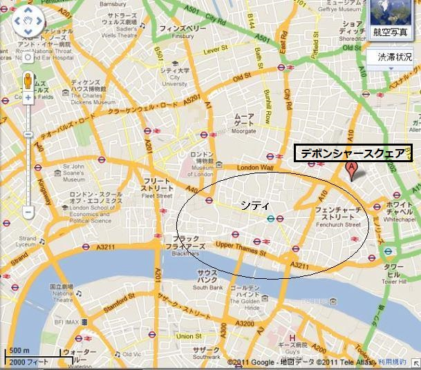
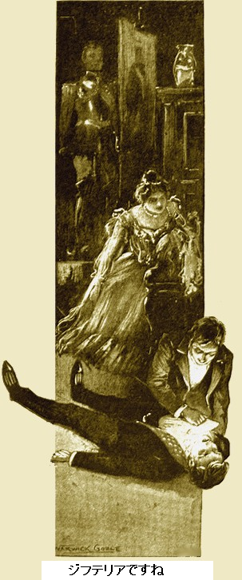
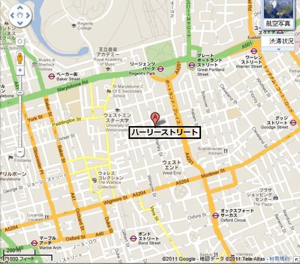
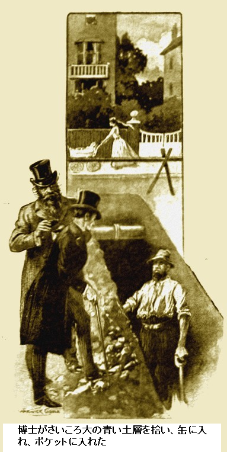
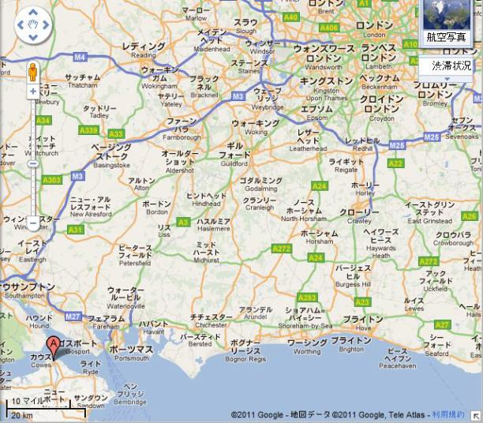
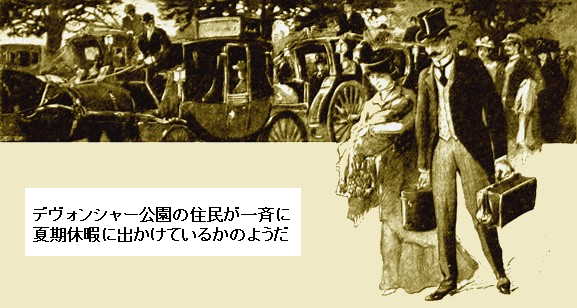
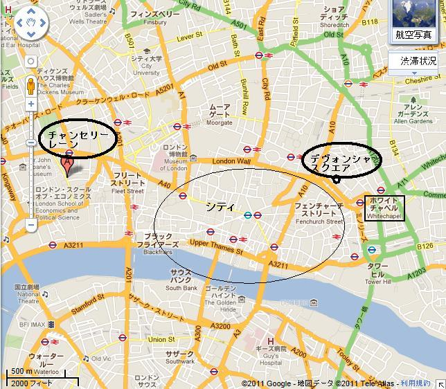
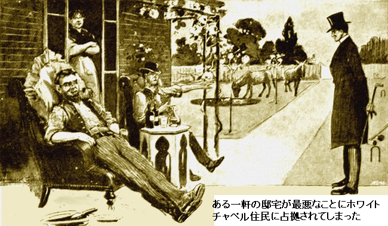

［＃ページの左右中央］
二〇世紀疾病物語
［＃改ページ］
玄関のベルがせわしくリンリンと鳴った。明らかに急患だ。ヒューバート医師が直々に、高名な医者がすることでもなかろうに、出迎えた時刻はなんと真夜中。背の高い上品なご婦人が夜会服に身を包み、玄関に転がり込んだ。髪のダイアモンドがキラキラ揺れ、顔が恐怖にひきつっている。
「ヒューバート先生ですね。フィリンガムと申します。ご存知の画家の妻です。すぐ来ていただけませんか。夫が……わたくしは台所にいたのですが……アトリエで……ああ、お願い、すぐいらして」
ヒューバート医師は余計なことを聞かなかった。フィリンガム氏は偉大な肖像画家で、名声やら姿をよく知っている。というのも同氏の家とアトリエが近くにあるからだ。
デヴォンシャイア公園地域は芸術家の溜まり場、小ぎれいな郊外にあり、建築家や庭師の見せ場でもあった。一〇年前はただの湿地に過ぎなかった。今では自慢げに話すことに、デヴォンシャイア公園に住んでいる。

ヒューバート医師は車寄せを歩いて行き、刈りこんだ芝生を通り、フィリンガム夫人の腕を抱え、正面扉から中にはいった。夫人が右側の扉を指差した。消耗しきって話せない。
笠付き電球が辺りを照らし、古びたオーク家具や
ヒューバート医師が周囲をざっと見た。重大な関心はうしろの暖炉の前で仰向けに倒れている人物だ。きれいにひげをそり、芸術家然とした感性的な顔がドス黒く青ずみ、喉が大きくはれている。
「死んでませんか」
と尋ねるフィリンガム夫人の声は消え入りそう。
ヒューバート医師が出来ることは、とりみだしたご婦人を安心させること。フィリンガム氏はまだ息がある。ヒューバート医師は照明ランプの傘を外して、電球をもち、長い電線を伸ばし、患者の口の上にかざし、なんとか喉の奥に光を照射した。

「ジフテリアですね。確実にレイブル型です。権威筋の中にはレイブル博士の発見をあざ笑う者もいます。私は四年間先生の助手を勤めたのでよく知ってます。幸いにも処置方法が分かりますし、二例成功しました」
自宅に帰り、数分で息せき切って戻って来た。妙な針のような器具を手に持っている。ソケットから電球を外し、替わりに電線付きのプラグをねじ込んだ。そして無造作にテーブルの上を片づけて、患者をよっこらしょっと乗せた。
「ではランプをこのようにしっかり持っててください。うまい、生来の看護婦ですよ。電気針を喉に刺します」
ヒューバート医師が多言なのはひとえに助手が神経質なためであり、他の何ものでもない。台上の病人が処置でぶるっ、肺が膨らみ、震えながらほーっと息を吐いた。心臓は弱いながらも規則的に動いている。病人が目を開け、何事かつぶやいた。
ヒューバート医師がどなった。
「氷、氷が家にありますか」
そこは豪邸、冷蔵庫にたっぷり氷がある。病床の患者が安全になるまで、ヒューバート医師は表情を緩めることはしない。
「これから治しましょう。半時間ほどで有能な看護婦を手配します。朝一番に、レイブル博士をお連れします。博士は絶対来ますよ」
半時間後、ヒューバート医師が馬車に乗ってハーリー通りに向かった。真夜中一時過ぎ、偉大なドイツ学者の家に到着。弱い灯が玄関にともっている。ボサボサ髪の大男が、巨体をくたびれた燕尾服に包み、ヒューバート医師を笑顔で迎えた。

レイブル博士が言った。
「やあ、よく来た。顔が興奮しておるぞ」
ヒューバート医師がきっぱり。
「レイブル型ジフテリアが発生しました。フィリンガム画家で、私の近くに住んでいます。運よく呼ばれました。処置をしましたから朝一番に患者を見てください」
大男のドイツ人からひょうきんな態度が消えた。ヒューバート医師にうやうやしく診察室の椅子を勧め、手短く詳細を聞いた。満足そうに笑ったのはヒューバート医師が博士の処置方法を述べた時。
博士が長いキセルをせわしくふかしながら言った。
「間違いなく君の診断は正しい。わしが言ったことを覚えているな。喉の腫れは血液の強毒の為だが、電気処理で治せる。ウイルスを北部で採取して、多数の動物で試した。ウィルスは全部死んだよ。わしが見つけたウイルスは事実上新型で、世の中で最悪のものだ。再発するし、そうなる。だからいろいろ治療法を探した。結果、電気が効いた。五匹の犬にウイルスを接種し、電気療法で二匹救った。君は私の用法に従い、第一段階を行い、フィリンガム氏を治療した。粘液を少し持ってきてないか」
ヒューバート医師が小さなガラス管の検体を見せた。しばらくレイブル博士が顕微鏡で検査。二重に確認したかった。
やがて口を開いた。
「同じものだ。再発するはずと思ってた。大都市中にいる。電気力がたった一つの対処法だ。下水処理の方策が最善なのだが、自治体には金がかかりすぎる。地中に電線を埋め、そうだな一万ボルトをかける。これを行えば、ロンドンの何百軒もの地下に埋まっているウイルスを破壊できる。わしが何年も前に言ったとき、笑われたよ」
ヒューバート医師が上の空で言った。
「地下ですか」
「そうだ、地下だ。思い出せないのか、英国の特定地域では他の地域に比べてガンが多い。病原菌が現場で掘り返されるからだ。細菌がいることをこの目で確かめた。短時間で、無頓着なロンドンっ子を目覚めさせてやる。天国に住んでいるだと。とんでもない。その天国とやらは一〇年前どうだった。陰湿なため池や、荒れ果てたレンガ工場だ。その上に家を建てるとき、何を埋めて、ならしたか」
「もちろん何百何千というたくさんの廃物を運んで、ですよ」
「そうだ、その廃物の過去と現在をいつか見せてやろう。今は家に帰って寝なさい」
＊
フィリンガム夫人はヒューバート医師と一緒にアトリエにいた。一方レイブル博士は二階で診療している。患者にとってはその夜が峠だった。実際、症状は
ヒューバート医師が上の空で聞いていた。こころは本件の先にあった。将来起こりうる事態を心配していた。
ヒューバート医師が慰めるように言った。
「旦那さんは体が丈夫ですから」
フィリンガム夫人が応えて、
「主人は最近働き過ぎでした。現在アストリア皇帝の肖像画を描いています。今日は皇帝陛下がお越しいただく予定でした。昨日は朝ここでお過ごしになられました」
でもヒューバート医師はなんら関心を示さない。
重い足音が聞こえたのは、博士が階段をドダドタ降りて来た時だった。博士の大声が響き渡った。世の王族方は心配ないさ、見立てがドイツ医者だから。
レイブル博士が叫んでいる。
「チャンスだ。いい機会だ。可能性が試せる。ジフテリアというより新種の病気だ。間違いなくジフテリアの仲間だが、血中の毒が悪さをする」
＊
やがてフィリンガム夫人と別れた後、レイブル博士はヒューバート医師を連れだした。博士が探したかった場所、そこは建築場、つまり排水工事が行われているところだった。
見ると、男たちがせっせと新築の家と排水を接続しており、排水は大きな溝で、長さ四十メートル、深さ二メートル。路上には馴染みのアスファルトのかけらや、レンガ等のかけらや、やや四角の青黒い廃棄地層がある。柔らかくて、濡れて、粘り気があり、臭いので、ヒューバート医師が顔をそむけて言った。
「お前らが砕いて捨てたんだろう」
現場監督が返事した。
「違いまっせ。ようしまへん。道路のガラクタ地層は何十年も前からおました。どこぞは神のみぞ知るですわ。しかしえらい臭いますなあ、こんな天気にゃ」
臭いは実に息苦しい。およそ考えられるすべての種類のガラクタや廃棄物が埋まっており、デヴォンシャイア公園の外観は美しいが、地下に二メートルから一〇メートル積もっている。地上に木々や花々が咲き乱れてもさほど不思議じゃない。しかしこの湿った黒い腐敗物は全く病気の温床だ。汚染布や破れ紙、土くれや腐敗植物、細菌まみれの食品、魚、骨など全部ここにある。
レイブル博士が鼻白んだ。
「最後の一グラムまで焼却炉で焼くべきだ。だができない。郊外天国の地盤に埋めている。こりゃあ、キミらの天国とやらが、やがてどうなるか。さあ急ごう」

博士がさいころ大の青い土層を拾い、缶に入れ、ポケットに入れた。フンフンと鼻を鳴らし、ペッペッと唾を吐き、軽蔑して言った。
「さて、ハーリー通りへ戻って、いいものを見せよう」
博士の言葉通りだった。デヴォンシャイア公園から持ってきた土くれを顕微鏡で調べると、大量の生き物が動いている。少なくとも四種類の病原菌がおり、ヒューバート医師が今まで見たことのないものだった。博識のレイブル博士が指摘した事実、これら全てが前夜フィリンガム氏の粘液にあった。
博士が興奮して叫んだ。
「思った通りだ。ロンドン中のベトベト湿った廃棄物を集め、ここに捨てて積み上げた。それに大量の植物を混ぜたため、至る所で発酵した。その上に土をかぶせ、熱くなるままにしておいた。すると、無数の致死細菌が増えに増え、科学の枠を超えてしまった。その上にいい家を立てた。わしが何年も予言し続けたのが新病の大発生、もしくは従来の毒性型だ。それが出てきた。みんなわしを変人と呼んだが、高電圧をかけて病原菌を殺せ、つまり稲妻で死滅させろと唱えたからだ。二本の鋼線を地中に這わせて、いいか、見てみろ」
悪臭を放つ四角い土に、電池をつないだ。外観に何ら変化はない。だが顕微鏡でのぞくと、どこにも微生物の痕跡がなかった。
「そら見ろ。治療結果に注目だ。これで全症例を治すとは言わない。ジフテリア側の損傷がほとんど
＊
ヒューバート医師が考え込んで帰宅した。診療室で看護婦が待っていた。フィリンガム氏を看病中の看護婦だ。
「仕事場から駆けつけてまいりました。エルムクレセントのウォーカー先生の所へ行ってください。フィリンガム氏と同じ症例を二件かかえて、途方に暮れておられます」
ヒューバート医師は帽子と電気針をひっつかんですぐ出発した。同業者がじりじりしながら待っていた。今回はデヴォンシャイア公園の豪邸に住む子供が二人、まさにフィリンガム氏と同じ苦しみにあえいでいた。二例とも電気処置で良好になった。ヒューバート医師がウォーカー医師にすべてを説明した。
ウォーカー医師が言った。
「恐ろしいですね。個人的にはレイブル博士を尊敬していますし、正しいと確信しています。もし広がれば、デヴォンシャイア公園の財産価値はスラム街より下がるでしょう」
真昼ごろ十九件のいわゆるジフテリア症例がデヴォンシャイア公園地区五キロ以内で確認された。最近穴掘りを行って致死性細菌をバラ撒いたことは明らかだ。でもまだ恐慌にはなってない。レイブル博士も大急ぎで駆けつけ、助手を大勢かき集め、ヒューバート医師と共に病院に寝泊まりした。てんてこ舞いになりつつあった。
＊
午後二時過ぎになり、ヒューバート医師はやっと再びフィリンガム家に立ち寄った。アトリエに突っ立ってフィリンガム夫人を待った。頭がいっぱいで平静じゃなかったが、アトリエから何か無くなっているような気がした。変だな、考えればこの部屋にはまだ二回しか入ってないのに。
フィリンガム夫人が尋ねた。
「何かお探しですか」
ヒューバート医師が声を上げた。
「はて、何か無いような気がして。今わかりました。衣装が無いですね」
フィリンガム夫人が物憂げに答えた。眠そうでぼんやりしている。
「送りましたわよ。皇帝陛下は行事でお出かけしなければなりません。たまたまその行事にはその衣装しか使えません。今日のスケッチ後、その衣装を召してお出かけになるはずでした。昨日、夫がここにおいておくようにお願いしたのです。それで……」
突然叫んだヒューバート医師の声は痛々しかった。
「陛下は昨日ここにあなたの旦那さんとおられた。旦那さんのジフテリアが陛下に」
そのとき、弱った夫人も分かった。
「ああ、神さま……」
もうヒューバート医師は部屋から出ていた。よろよろ歩いて、
声を絞り出し、命令した。
「バッキンガム宮殿だ。超特急で行け。五ポンド札をはずむぞ。三時までに着けば」
＊
既にデヴォンシャイア公園のことが噂になり始めていた。日刊新聞がネタ元をつかむ技は見事。ヒューバート医師が家路につきながら、ちらちら二、三の記事に目を留めると、奇妙な伝染病の暗示があった。
やがてフィリンガム家で、レイブル博士がヒューバート医師に合流した。博士が大きな手で揉み手をしている。博士は劇的な展開は何も知らなかった。ヒューバート医師に今までどこにいたのか尋ねた。
「博士の友人のアストリア皇帝の救命治療です。皇帝陛下は昨日フィリンガム画家とここにおられました。現在とてもお元気なようでいらっしゃいますが、
ヒューバート医師は大男のレイブル博士がこの一撃でぶっ倒れるかと思った。だがレイブル博士は笑みを浮かべ、うなずき、煙草に火をつけ始めた。
「又しても上出来だ。わしはアストリア宮廷の名誉医者だよ。当然宮廷に行くさ、ここの仕事が終わったらな。皇帝には四、五件の病気を治療してさしあげた。もし何か悪いところがあればいつも私をお召しになる」
「皇帝は強毒性ジフテリアにかかられたかもしれません」
レイブル博士が冷静に答えた。
「たぶんな。全ては神の手中だ。皇帝の体質は隅々まで知っておる。もし病気になられたら、わしが確実に回復させてやる。むしろそうなってもらいたい」
「何事も現実的ですね、どうしてですか？」
「大衆を驚かすためだ」
と博士が叫び、煙草を吸い始めた。部屋をうろうろ歩きまわり、煙草の煙でいっぱいにした。
「誰もが我が事のように思うだろう。そうすれば何か起こる。わしの説教につぐ説教はむなしかった。ランセット医学雑誌だけが少し取り上げた。何回も二十五万ポンドを要求して、細菌性病気の電気治療を行う学校を創立しようとした。マラリアを根絶したかった。大量の汚物や廃棄物は、熱病などを媒介しやすいので電気処理すべきだ。致命的な災難をもたらす大量の物質や、生ゴミの山を集めて、電流で無害化できるのに。しかし出来なかった。金がかかる。貧乏な政府には金がない。一、二年前に一万ボルトの電気を供給しておれば、ここをイギリス一の衛生地域にできたのに。ただ地中のあちこちに高圧電線を走らせるだけだ。そうすれば、多くが死滅し、一掃され、永久にいなくなる。おそらく今回やれそうだ」
＊
ロンドンが不安になりつつあった。以前にも大流行はあったが、通常型だった。例えば天然痘はかつてほど恐れない。現代科学が致死性疾病と格闘し、恐怖を半減した。だがこの新型ジフテリア伝染病は別物だ。
ヒューバート医師はその夜、夕食につきながら暗算をした。デヴォンシャイア公園にはいろいろな家が千戸近くある。これらを見捨てなければならないのか。ロンドン大地図を広げて、最近急速に開発された地域に青鉛筆で印をつけた。ここのほとんどすべては膨大な人工地盤が必要だった。これらの地域に建てられた安
執事が入ってきてイーブニングワイヤ紙を台に置いた。ヒューバート医師がちらっと眼をやった。何も特ダネはなかった。皇帝が地方へご訪問された話題が大見出しだった。バッキンガム宮殿に問い合わせたところ、事実であることが分かった。
ともかく、何事もなかったのだろう。ヒューバート医師は煙草を吸い終わり、外出にとりかかった。新聞を脇に投げたとき、最新ニュース欄が目にとまった。たった一節が白海に浮かぶ黒島のようだった。
『警告は必要ないかもしれないが、アストリア皇帝が危険に会われ、報道によれば今晩マルボロ邸の夕食を欠席される由、原因は軽いお風邪と喉痛によるもので、チャリングクロス駅の隙間風の為とか。皇帝は明日計画通りカウズにお出ましになる予定』
ヒューバート医師が疑わしげに頭を左右に振った。軽い風邪と喉痛は前兆だ。不安に心乱れて、病院へ向かった。午後、二例の患者が出て、医療関係者は不安で心配そう。猫の手も借りたいほどで、ヒューバート医師が精一杯対応した。
夜十一時近く、ヒューバート医師はよろめくように家路に着いた。郊外のビジネス街は一軒の新聞店がまだ開いている。
強烈なビラが関心を引いた。その一撃に圧倒された。
『アストリア皇帝ご病気。陛下、新型病に罹患。バッキンガム宮殿最新速報』
ほとんど無意識に新聞を買った。これ以上の情報はない。皇帝が重病だ。
帰宅すると電報が一通あった。開封した。電文は簡潔にして的確。
『バッキンガム宮殿に参内 。レイブル型ジフテリア確実。治療後明日朝再会。レイブル』
ロンドンは深く心から感情を動かされた。偉大な国王が一族の友情を温めようと、はるばる親しく渡英された。お楽しみのまさに始まろうとするとき病床に伏せられた。
大衆は全てを知った。荘厳な軍服姿の行幸はもとより、待ちに待った八時の広報によれば、ルドルフ三世が危篤だという。またレイブル博士が緊急に
人々はかなりよくわかってきた。何が起こって何が原因か。誰もが予期しない形で、レイブル博士の警告が来襲した。
博士は夜遅くこっそり半時間自宅へ逃げ、記者を振り切った。決して軽視したわけじゃない。事態は悪くなり、悪化する一方だ。予見する限り、この種の事変は不可避だ。ロンドンっ子が汚物まみれの丘に家を建てるほどアホなら、当然その結果に甘んじなければならない。
ヒューバート医師は事情をほとんど知らない。消耗しきって椅子に座り込み、しばし休息を取ろうと考えた。三時間近く熟睡した。誰かが肩を強くゆすっている。やっとのことで後ろを見ると、レイブル博士がかがみこんでいた。
レイブル博士がボソボソ言った。
「やあ、元気かい」
ヒューバート医師が弁解がましく答えた。
「死ぬほど働いて、疲れ果てました。皇帝のご容態は？」
「陛下は期待通り回復中だ。しかしとても悪い事例だ。有能な者にゆだねたからここに来れた。病院で君を探していたぞ、どこかで、てんてこ舞いじゃないかと。病院は満杯だ。近くの四軒の病院も満杯だ」
ヒューバート医師が叫んだ。
「そんなに広がっているんですか」
「そうだ。明日の今頃は千件にもなるぞ。当局が全てを仕切って、我々を助けてくれる。若い医者や看護婦や備品が続々来ている」
「人々を家から追い出して打開するのですか」
レイブル博士が苦笑い。ヒューバート医師の肩に手を置いて、道路を指した。様々な馬車や車で騒然としている。
デヴォンシャイア公園の住民が一斉に夏期休暇に出かけているかのようだ。電気アーク灯が照らし出した顔は蒼白で怖がっている。本来楽しいお祭りのはずなのに。あちこちで子供が幸せそうに眠っているが、本質は悲しい集団移動だった。

レイブル博士が口をへの字に結んで言った。
「ほうら、伝染病から夜逃げだ。何時間も続いておる。乗り物があれば今頃は終わっていたろうに。大抵の運転手は呪われた場所へ行かない。だが、金がものを言う。だから眼の前にこんな光景が見える」
ヒューバート医師は黙って行列を眺めていた。どの馬車や乗り物にも手荷物がほとんどない。家族がそっくり移動している。デヴォンシャイア公園の大抵がとても裕福な地区であり、従って出国は簡単だ。パニックのあまり、何もかも捨て、あわてて夜逃げして、命と安全を求めている。
そのあとヒューバート医師は明日の難行を前に眠った。翌朝、心配げに朝刊を開いた。
特に楽しい記事はなく、情報ではアストリア皇帝の健康に関し、峠を乗り切った由。他の記事は疾病が広がっており、デヴォンシャイア公園で二百五十件発生とか。レイブル博士の言葉が遂に本当になった。恐ろしい予言が証明された。そして最悪なことに、どこで終息するのか誰も言えない。
＊
変に思われるかもしれないが、ロンドンは一人の男の健康を心配するあまり、市民への大きな危険がすっぽり隠れてしまった。一瞬デヴォンシャイア公園は忘れ去られた。たった一つの強烈な関心がバッキンガム宮殿だった。
三日間大衆が宮殿に集まり、やがてレイブル博士と同僚が立ち会って、やっと希望が持てることを報告した。アストリア皇帝が回復し始めた。レイブル博士は自分の根拠を相当確信しない限りそんなことをいう男じゃない。
このことが大衆に浸透して初めて、ロンドンを脅かしている危機にぱっと関心が向いた。デヴォンシャイア公園は事実上隔離された。脱出できるものは全員逃げたし、留まったものは特定地域に幽閉され、教会から食料を供給された。新型疾病が急速に広がった。
一区画以上に勧告が出され、ある地域の家はすべて撤去し、地盤を洗浄、滅菌しなければならない。何百万ポンドも損するだろうが、恐怖の最中、そんなことにかまっちゃおれない。
週末になると新型ジフテリアの処置が七千件になった。一日に一千人以上来院。デヴォンシャイア公園は見捨てられたが、貧困地区から犠牲者が出た。遺棄された豪邸は、恐れを知らぬ新参者にとって奇妙な光景に写った。デヴォンシャイア公園は
向う見ずな記者が隔離地域に潜入し記事を書いた。他の誰より恐れを知らぬ記者が無人の豪邸で一昼夜過ごし、新聞社に特ダネを送った。
数時間経つと、邸宅の大部分が再び占拠された。スラム街には大勢の男女がおり、やつらは病気など全く恐れず、身近にありすぎるから、ぞろぞろ西の方へ住処を求めてやってきた。にっこり微笑む邸宅は一種の陣取り場、つまりチャンセリー通りの巨大団地と化した。

誰も困らなかった。
第一週のほぼ終盤になると異常な事態がヒューバート家に降りかかった。へとへと、
ヒューバート医師が同僚に尋ねた。
「どういうことだ、ウォーカー君」
ウォーカーは時間勤務を経てちょうど帰って来たばかり、熱くなって興奮している。
「完全な事件ですよ。警察はすっかりさじを投げています。署まで行ったんだが、言うに事欠いて、あの地区で有能な警官を配置するのは無理だと。フリントンヒルやエヴァースリーガーデンあたり一帯の家々は浮浪者であふれています。イーストエンドから流れ込んできて、豪邸をめちゃめちゃにしています」
ヒューバート医師は帽子と外套をひっつかんで出て行った。まさにウォーカーが言ったとおりだった。ある一軒の邸宅、厩舎や温室等が完備しているが、実際、最悪なことにホワイトチャペル住民に占拠されてしまった。薄汚れた子供たちが芝生で遊び、何週間も垢を溜めた女が二階の窓から何か洗い物を掛けている。花壇は踏みつけられ、二頭のやせ細ったロバが芝生を

ヒューバート医師が煙の出ている家へ向かった。二人の男がモロッコ椅子に寝そべりながら汚い
ヒューバート医師が
「ここで何してる？」
「持ち主なら仕方がないが、そうじゃなければ見るだけにしな。バターを塗るパンの面は知ってるぞ」
この哲学命題を受け入れる以外なかった。ムラムラこみ上げる怒りをぐっとこらえて離れた。道すがら、ほかにもたちの悪い侵入形跡がある。扉を閉め、ブラインドを下ろしている家がちらほらあるが、例外に属する。
ヒューバート医師は辻馬車を見つけ、怒りを胸に警視庁へ行った。事態を話すと、むしろ驚いたのは警察の方だった。
警部が言った。
「忙しいんですが、事態は処理しなければなりません。昨日レイブル博士が来られて、勧告に従い現在全力を挙げて電気処理を行ってます。一種の
ヒューバート医師は満足げにうなずいた。電気治療が正解のようだ。レイブル博士が以前見せてくれた電流の適用効果は、道路掘削現場から採取した物質に付いた無数の病原菌に、如何に作用することか。そんなことを考えていたら、馬車の中で眠りに落ちた。重労働に戻る途中であった。
＊
ロンドンは新治療に殺到した。
レイブル博士が人々を集めて、特効薬の為に一日一時間何でもせよと命じたら、喜んでそうする。あらゆる開業医や公共病院が死ぬほど働いた。一〇日後には事実上ロンドン全域が処置された。もうやることはなく、じっと結果を待つだけ。
翌週突如、流行が減り始めた。第二週の最後には一日平均八十人に落ちた。十七日、十八日目にはたったの四例だった。どの事例も処置を受けていない患者であることが分かった。
災害は終わった。二日経過し、ともかく新たな発生はなかった。数時間前、強力な警官隊がデヴォンシャイア公園に突入して、極楽区域から貧民をすべて排除した。かつてこの地域がお気に入りだった住人のうち、勇敢な者が一人二人おずおず戻り始めた。もう接種済みなのでちっとも恐れてないようだ。
だが、レイブル博士には一言あった。もう行動は自由だし、王室の病人は実際に手を離れた。議会によって、強力な王立委員会が設立され、直ちに詳細な調査を命じた。
レイブル博士がヒューバート医師に含み笑いして、後者が座ると、大男のドイツ人博士は自前の煙草をふかして言った。
「わしが最初の証人だよ。二、三ものを言わねばならぬ」
博士が大きな頭を前後に振ってにっこり。最後の数週間激しく活動したにもかかわらず、ちっともこたえてないように見える。
ヒューバート医師が言った。
「私も召喚されています。ところで、博士は豪邸を壊すべきだとおっしゃってなかったですか」
「そんなことは言っとらん。事実を絞ろう。君の医学特許公告では電気は生命だと述べている。真実が語られていない。大災難からロンドンを救ったものは何だ。電気だ。新疾病を殺し、無力にしたものは何だ。電気だ。大量に存在するゴミや汚物と戦う立役者は何か。常に電気だ。費用の面から以前は行われなかったが、結果を見よ。あれやこれやでロンドンの事態を収めるのに二百万ポンドを使っただろう。わしが要求した金額の三分の一を少し超えた程度だ。わしが話すのを楽しみにしてろ」
＊
当然最大の関心が起きたのは委員会の初っぱなだ。やや尊大な議長が自己満足と見栄の為、レイブル博士をおとしめようとした。だが大男のドイツ人は一切のらなかった。のっけから委員会を支配し、独自に証拠を示し、発見事実を語った。そして、結局出席者の中でただ一人、調査対象の全てを知る男であった。
「あなたは家を壊すつもりでしたか」
レイブル博士が
「一切ない。豚小屋ひと
「よろしければ要点を」
と議長がうながした。
レイブル博士が哀れむようにほほ笑んだ。低学年生に接する教師のようであった。
「対策は簡単。一組の配線を地中に挿入し一万ボルトをかけて、当該地域をあちこち処理するよう提案する。病気の予防注射として非常に有効だ。しかし恒久的ではない。原因が存在する限り、常に危険がある。害悪を除去するよう提案する。工程表とか実行計画は聞かないでくれ。肝心なことは有能な当局が担当すれば大量の病原菌土壌が安全になって純水のように無害になるということだ。今欲しいのは以上だ。長い会議や報告や議論ではない。私に治療させてくれ、そのあとで好きなだけ議論や会議をやればいい」
レイブル博士が自説を通したために、思い通りに何でもできたのだろう。ロンドンは平静、謙虚、寛大な
＊
レイブル博士は掘削現場に立ち、全ての危害のもとになった標本を採取した。やや落ち着いてきて、感情を抑え気味だったが、目は輝き、手が少し震えていた。指をぷるぷる振って、青っぽい灰色の地層のかけらを
「すばらしい奇跡だ。配線を地中に通し、あとはこの強力なしもべが無言で大仕事をしてくれた。地下で電流が放射し、放電するにつれ病原菌が少なくなり、最後に消滅する。町のあらゆる不潔な地域に施工するだけで、たちまちあらゆる疾病が永久に消えるはずだ」
ヒューバート医師が尋ねた。
「その土壌はいま確かに安全なのですか」
レイブル博士が叫んだ。
「未来がかかっておる。顕微鏡が楽しみだ。絶対正しいよ」
正解だった。
了